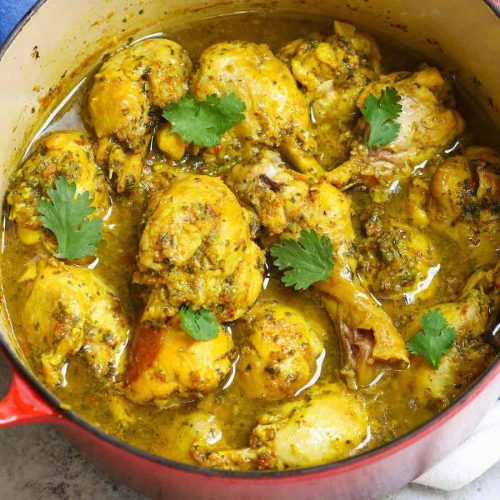

Curry Chicken

A classic, spiced caribbean chicken dish. This particular recipe is specific to the Trinidadian locale, but variations are abundant. Without further ado, let's get into it!
Ingredients:
- 3lbs skinless chicken thighs
- 1/2 cup green seasoning
- 1/2 tsp cumin
- 1/2 tsp curry powder
- 1 tsp salt
- 1 tsp pepper
- 1 onion, chopped
- 1/8 cup garlic, chopped
- 1 chopped habanero, unseeded
- 4 tbsp curry powder
- 1 tsp cumin powder
- 1/2 tsp turmeric
- 1/2 tsp garam masala powder
- 3 tbsp green seasoning
- 3-4 tbsp oil
- 2 potatoes, cut in cubes
- Salt to taste
Steps:
- Mix the chicken with the 1/2 cup green seasoning, 1/2 tsp cumin, 1/2 tsp curry powder, 1 tsp salt, and 1 tsp pepper. Let marinate for 2 hours or overnight.
- Mix the remaining curry powder, cumin, turmeric, and garam masala in a bowl.
- Heat oil over medium high heat and stir in onion, garlic, and chopped habanero and sauté until the onion turns golden brown.
- Add in the mixed spices and stir continuously for several minutes. Add a 1/4 cup of water and make a slurry and cook the curry until it begins to thicken.
- Add in the marinated chicken. Mix well and cook covered for 10 minutes, when the chicken begins to simmer in its juices.
- Stir and cook for an additional 5-8 minutes, and add 2 cups of water along with the potatoes, salt, green seasoning and cooked covered until the chicken begins to fall off the bone.
- Enjoy! Best served with rice.